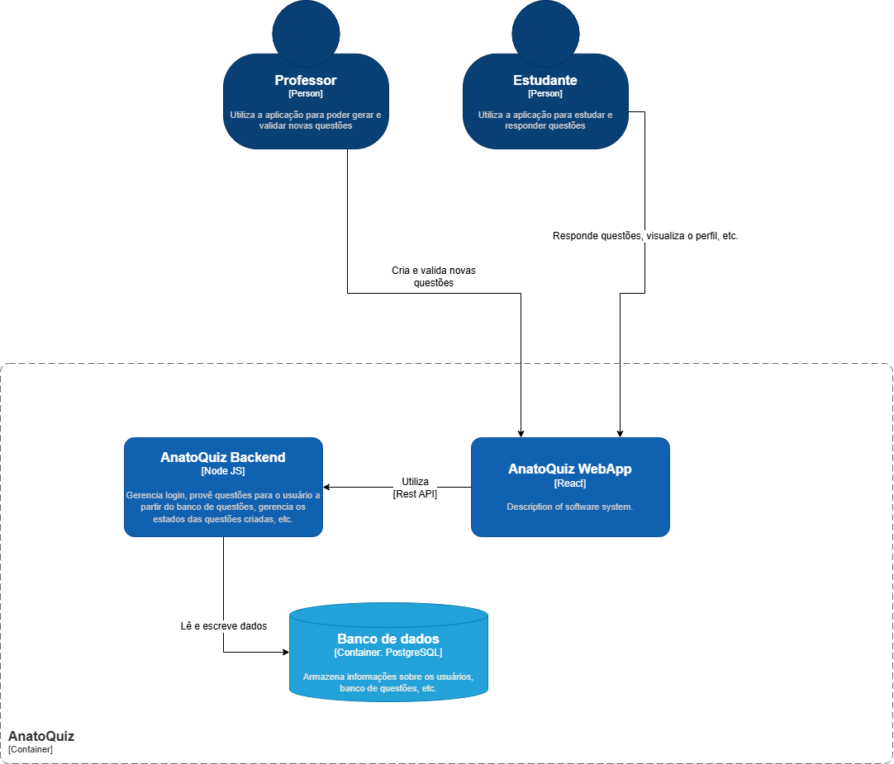

Tecnologias
Estilo Arquitetural
( a definir...)
Visão Geral
Diagrama de Contâiners
O diagrama a seguir apresenta a decomposição do sistema em seus principais contêineres, mostrando as escolhas tecnológicas e a comunicação entre contâiners

Componentes
Frontend (React)
Único responsável pelas interações com o usuário.
- Realiza chamadas ao backend via API REST
- Gerencia estado da interface e interações do usuário
Backend (Node JS)
Responsável pelas regras de negócio e processamento da aplicação.
- Gerencia autenticação e autorização
- Controla o fluxo de criação, validação e resolução de questões
Banco de Dados (PostgreSQL)
- Armazena dados de usuários
- Armazena questões e seus estados
- Registra respostas e desempenho dos estudantes
Referências
CAJUDEVS. Entendendo o C4 Model: uma abordagem para arquitetura de software. Disponível em: https://medium.com/cajudevs/entendendo-o-c4-model-uma-abordagem-para-arquitetura-de-software-3ed0f007ae66. Acesso em: 10 abr. 2026.
C4 MODEL. Container Diagram. Disponível em: https://c4model.com/diagrams/container. Acesso em: 10 abr. 2026.
Histórico de Versão
| Data | Versão | Descrição | Autor(es) |
|---|---|---|---|
| 10/04/2026 | 1.0 | Criação do documento de arquitetura | Caio Santos |